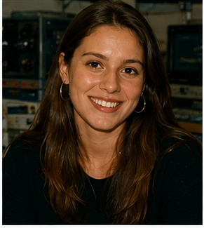

Vicky NORTH
Je fais parti du Hall Alpha.
Richard Holloway représente une génération plus jeune du corps professoral.
Passionné par l'évolution rapide de l'informatique, il développe depuis plusieurs années les infrastructures informatiques de l'université.
Il encourage ses étudiants à expérimenter plutôt qu'à simplement apprendre la théorie.
Son bureau est souvent rempli de matériel informatique, de manuels techniques et de composants électroniques.
Domaines : informatique, réseaux, programmation, systèmes électroniques.